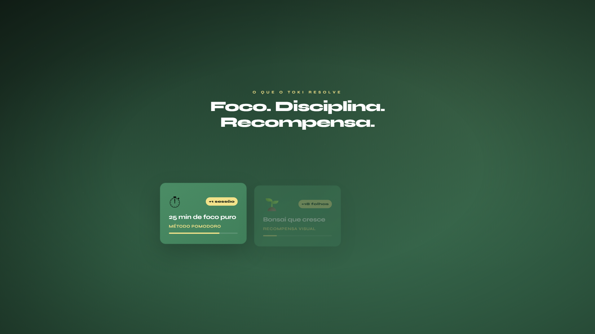
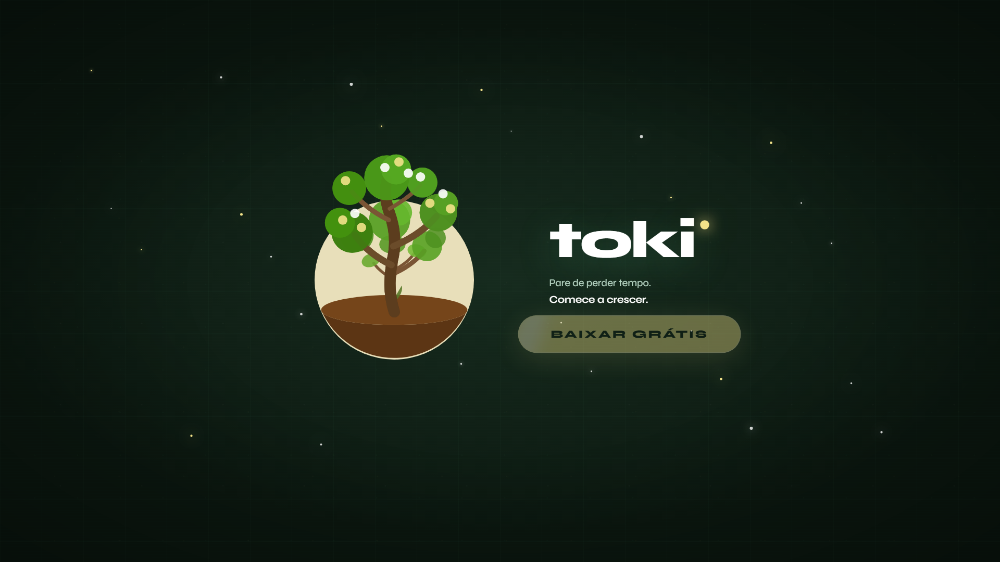
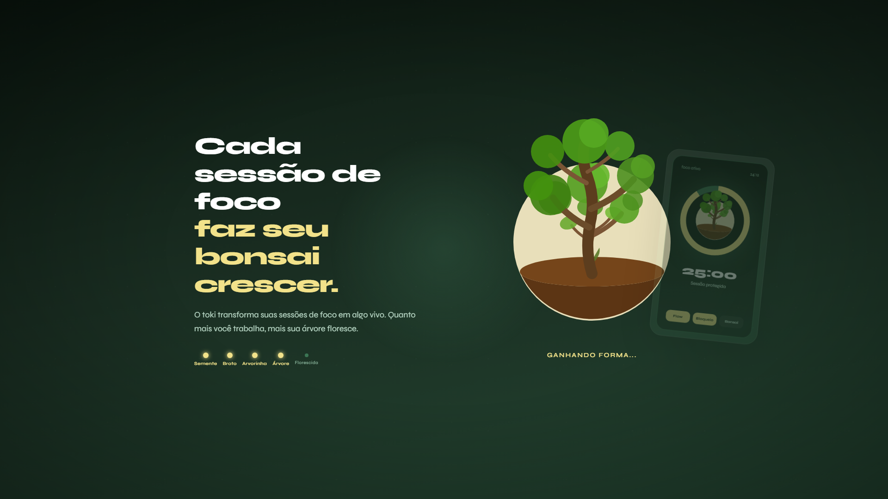

01
Timer
A configurable Pomodoro cycle that puts a clear boundary around your work. The timer isn't a clock — it's a commitment.

The biggest platforms are built to keep your attention moving. TOKI was built to help it land.
No account in beta Local blocking Timer + tasks + presence Windows installer
The common enemy
Big Tech wins when your next minute becomes another scroll. TOKI gives that minute back a place to go: one task, one protected block, one quiet window that is on your side.
The instruments
Less dashboard, more place. Each instrument exists to get you into the block — not to manage your life.
01
A configurable Pomodoro cycle that puts a clear boundary around your work. The timer isn't a clock — it's a commitment.

02
Chosen sites and apps are kept out of reach while the cycle runs. Local, desktop-level enforcement — no extension, no workaround.

03
Your work leaves a trace. A quiet companion grows through your sessions — presence without push notifications, progress without a scoreboard.
Ready to enter your first block?
Download for WindowsProduct proof
See TOKI in use: focus cycle, blocking in action, and the feel of a window that stays open and stays yours.

Philosophy
Productivity doesn't fail from lack of method. It fails when the products around you are better at capturing attention than your workspace is at protecting it.
TOKI lives in the Ma: the Japanese concept of meaningful pause — the space between wanting to do and actually doing. A quiet room that waits for you.
The digital third place
TOKI is designed to be a space users return to because they genuinely want to be there, not because they received another push notification.
The desktop decision is strategic. Serious work happens on the same machine where distractions live. TOKI meets you there — quietly, on your side.
Pricing
Download the local Windows installer and run a real cycle — no account needed.
File: toki-setup-1.0.0.exe · No account required
It has Pomodoro, but the product is bigger: an emotional focus environment for starting and protecting work blocks. The timer is one instrument in a room built for deep work.
Yes. The current beta runs as a local desktop app on Windows. No internet required once installed.
No. Download, open, and start a block. That's it. Account support may come later, but the beta is fully local.
Yes. The desktop app can import work from Notion and Todoist. Google Calendar integration is planned for a future release.
A quiet companion that grows alongside your sessions. Not a game, not a streak — just a gentle signal that you showed up and did the work.
The companion
Not a metric. Not a streak. Just a living thing that shows up because you did.
TOKI
Download the beta, open a task, and let the environment protect your next block.